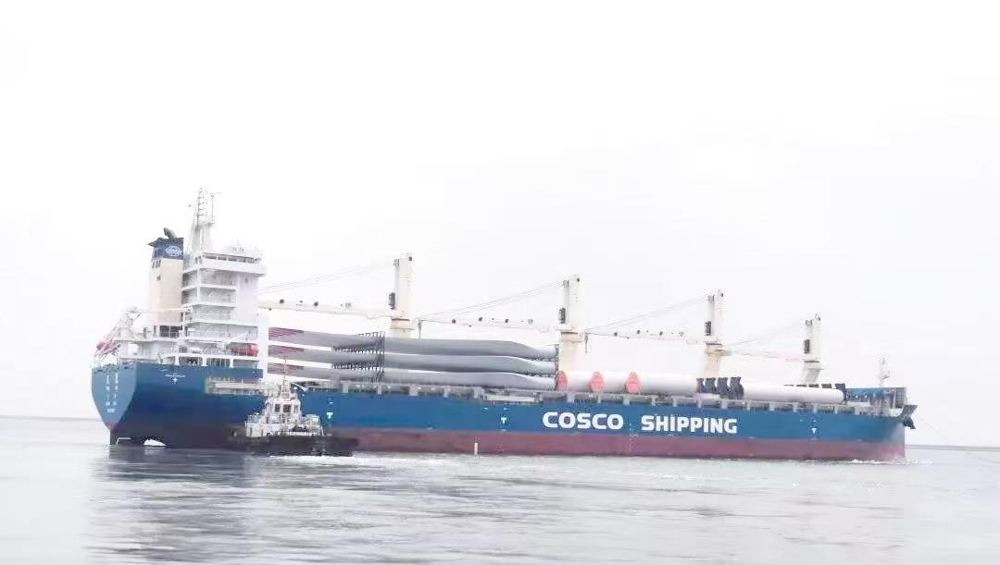

重大海事应急救援经典案例
案例1：中远海运“天恩”轮印度洋救援遇险渔船
2023年，中远海运“天恩”轮在印度洋航行时，接收到附近渔船的求救信号，渔船因发动机故障失去动力，且遭遇大风浪。“天恩”轮立即调整航线，顶着风浪靠近渔船，通过抛投救生绳、转运物资等方式，成功将12名渔民转移至本船，全程历时8小时，无人员伤亡。

案例2：南海救115船南海搜救失联货轮
2022年，一艘货轮在南海海域失联，船上有20名船员。交通运输部南海救助局立即派遣“南海救115船”赶赴事发海域，结合卫星定位和无人机巡查，在72小时内定位到失联货轮，此时货轮已进水倾斜。救援人员通过救生艇分批转移船员，最终成功营救全部20名船员。